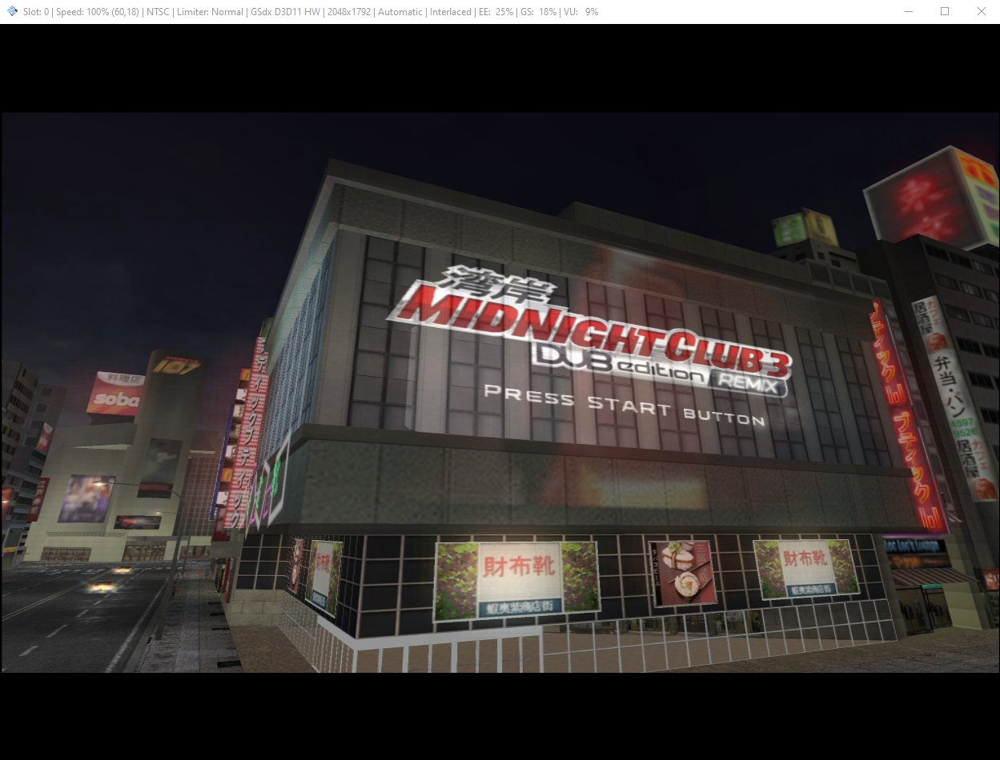

Tutorial de instalação do PCSX2
Instalando o PCSX2
-
Descompacte o arquivo do PCSX2 em algum lugar do seu HD.
-
Descompacte o arquivo das bios e cole dentro da pasta extraida no passo anterior
Caso pergunte se deseja substituir a pasta, clique em sim
Configurando o PCSX2
-
Abra o arquivo pcsx2.exe
-
Escolha o idioma (Ele vai sugerir o mesmo idioma do Windows), clique em Próximo
-
Não precisa mudar nenhum dos plug-ins, clique em Próximo
-
Nesse passo é preciso escolher a Bios (Caso não apareça na lista, clique em Atualizar
lista)
Eu recomendo selecionar a Japan v02.20(05/09/2006). Clique em Concluir
-
Agora você chegou na página principal do emulador
-
Entre nas configurações de emulação
-
EE/IOP (Deixe da mesmo forma)
-
VUs (Deixe da mesmo forma)
-
GS (Deixe da mesmo forma)
-
Janela de GS (Deixe da mesmo forma)
-
Hacks de velocidade (Deixe da mesmo forma)
-
Correção (Deixe da mesmo forma)
-
Agora acesse as configurações de Vídeo
-
Na opção Renderer marque a opção Direct3D 11
(Hardware)
Na opção Adapter escolha a sua placa de vídeo
Na opção Internal Resolution escolha a escala, essa opção depende das
configurações do seu PC, escolha entre (2x, 3x ou 4x) e observe qual se comporta melhor.
Após escolher a escala, marque a opção Large Framebuffer
Marque a opção Enable HW Hacks
Clique no botão Advanced Settings and Hacks (Continua no próximo passo)
-
Selecione a opção Fast Texture Invalidation
Na opção Half-screen Fix escolha Force-Enabled
-
Clique em Ok e em seguida, clique em Ok novamente para fechar as configurações de vídeo.
Iniciando o Jogo
-
Na tela inicial:
Clique em CDVD > Seleção de ISO > Procurar
Encontre a ISO que você baixou no Passo 4 dos pré-requisitos.
Selecione o arquivo e clique em Abrir
-
Certifique-se que a ISO está realmente marcada
-
Para iniciar o jogo:
Clique em Sistema e Carregar ISO (rápido)
Agora é só se divertir!!!
